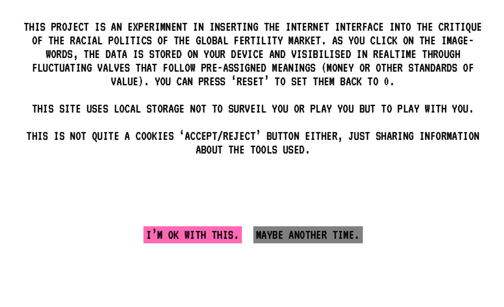
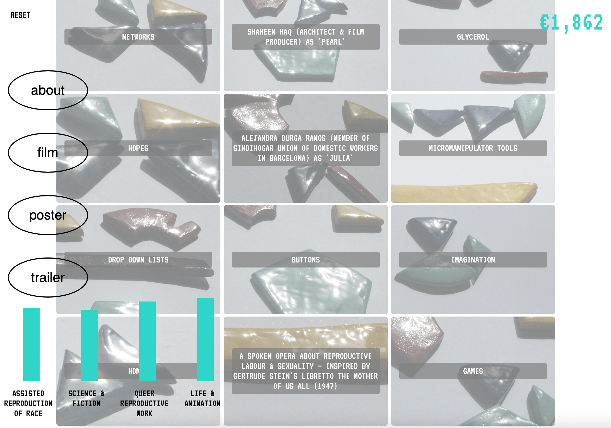

BIO
POETRY
ART & RESEARCH
WORKS & WORDS
Browser works


Film & Video
Essays & Criticism
The "I"s of Artistic Research.
NO NIIN magazine
Sappho and Reproductive Technologies.
Glasgow Womens Library
Bodily archives.
Art Asia Pacific Magazine
The manifesto – ‘a little machine for producing desire’.
Performance Research
The real protagonists.
Frieze
The lesser evil.
Review 31
‘I didn’t close containers immediately after use.’
Frieze
During 2015–19 the names of 52 streets in Madrid were changed.
Art Asia Pacific Magazine
Heavenly, escape, exile.
Art Asia Pacific Magazine
Videos for Post-Truth Times.
Art Asia Pacific Magazine
A certain future.
Frieze
The history of silicon: also my story?
Art Asia Pacific Magazine
Constructing Decolonial Subjects.
Art Asia Pacific Magazine
Where Historical?
Art Asia Pacific Magazine
Metaphorical and literal (shipping) containers.
Frieze
Display meaning scattered, gathered.
Art Asia Pacific Magazine
All play is serious.
Frieze
The regulation of freedom.
Art Asia Pacific Magazine
Breaking unspoken codes.
Art Asia Pacific Magazine (2009)